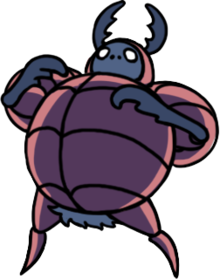
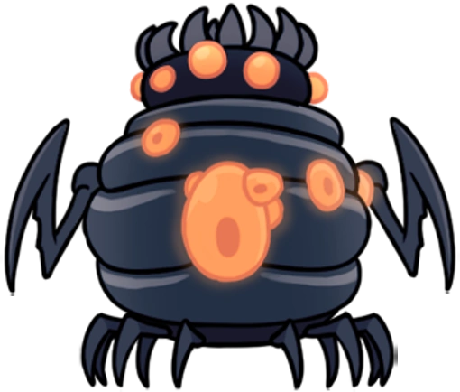
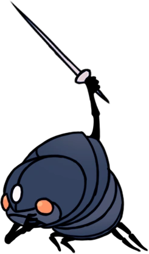
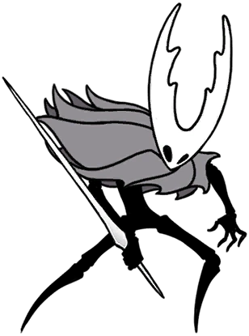
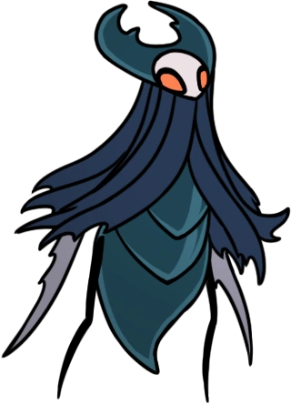
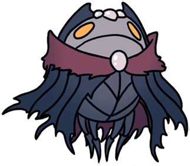
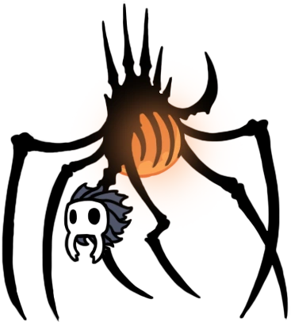
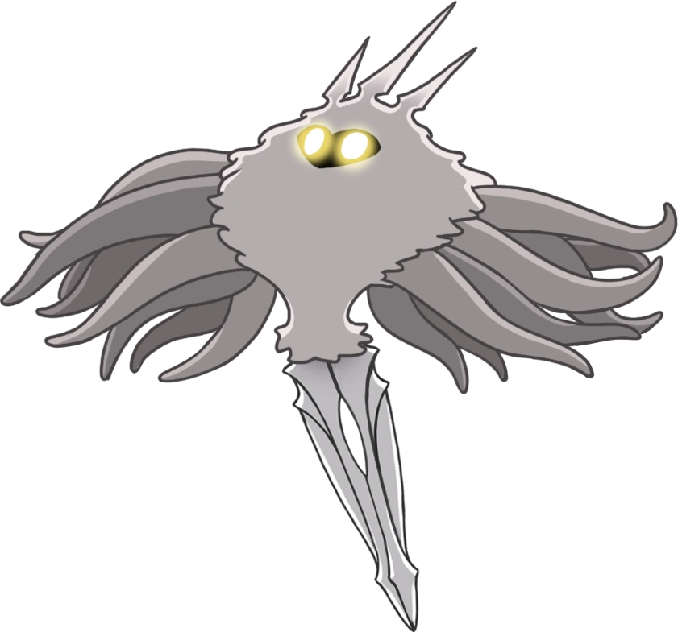
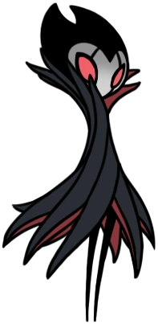

-
Hornet

Caminho Verde
Hábil protetora das ruínas de Hallownest. Empunha uma agulha e linha. Eu vi essa pequena criatura ágil. Eu pensei que ela era presa e ataquei para ela, mas com um flash ela me esfaqueou com o ferrão voador e disparou para longe.
-
Defensor do esterco

Hidrovia Real
Hábil guerreiro que vive no coração da Hidrovia. Ataca intrusos com bolas de esterco compactado.
-
Brooding Mawlek

Encruzilhada Esquecida
Eu ouço esse animal gritando às vezes enquanto ronda as cavernas, embora nunca tenha posto os olhos nele. Quem ou o que está pedindo? Tanto quanto posso dizer, sua voz nunca é respondida.
-
Alma Guerreira

Hidrovia Real
O Receptáculo Quebrado é um dos vários receptáculos criados pelo Rei pálido para conter a infecção, e que foram descartados no Abismo. Apesar disso, ele conseguiu fugir do abismo.
-
O cavaleiro Vazio

Encruzilhada Esquecida
Receptáculo adulto que carrega o coração da praga em seu corpo. O velho rei de Hallownest... ele deve estar desesperado para salvar seu mundinho em ruínas. Os sacrifícios que ele impôs aos outros... tudo por nada.
-
Lorde Traidor

Jardins da Rainha
Lorde deposto da tribo Louva-a-Deus. Abraçou a infecção e se voltou contra suas irmãs.
-
Mestre das Almas

Cidade das Lágrimas
Líder do Santuário das Almas. Acumulou alma com esperança de evitar a aflição de Hallownest, mas acabou se intoxicando com seu poder.
-
Nosk

Minério Pálido
Imita formas de outras criaturas para atrair presas ao seu covil. Na escuridão mais profunda, há bestas que usam rostos roubados de suas memórias e arrancam as cordas do seu coração.
-
Radiância

Nos seus sonhos
A praga, a infecção, a loucura que assombra os cadáveres de Hallownest... a luz que grita dos olhos deste Reino morto. Qual é a fonte? Suponho que meros mortais como eu nunca entenderão.
-
Grimm

A trupe Grimm
Através do sonho, viaja, ao chamado da lanterna, consumindo as chamas da queda de um reino.